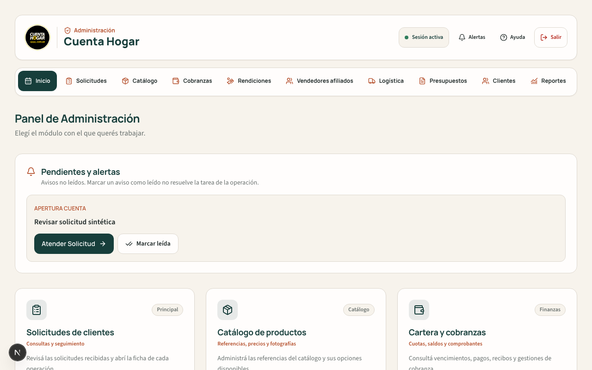
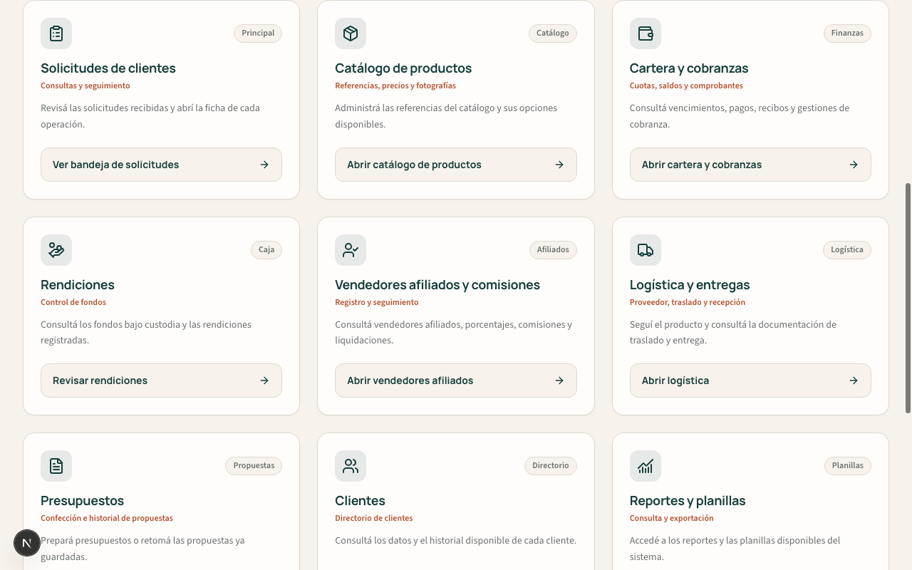
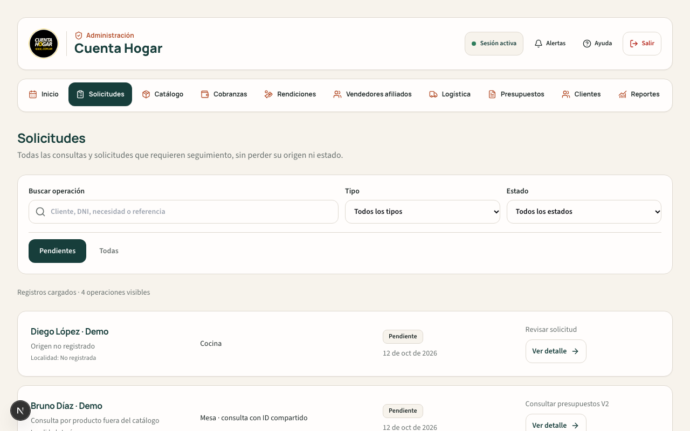
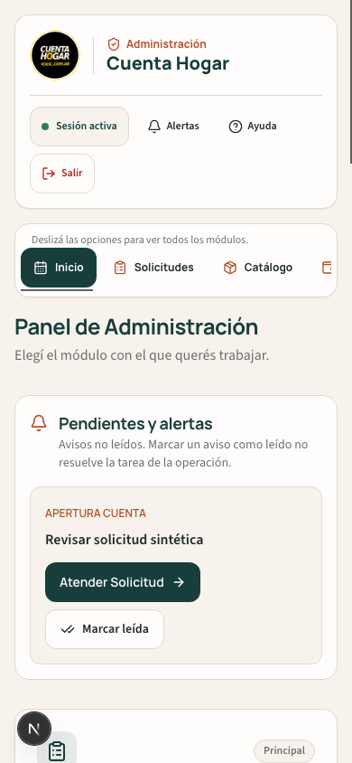
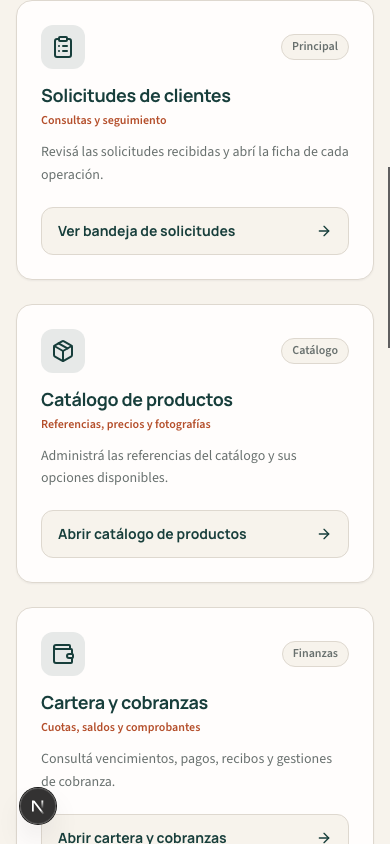
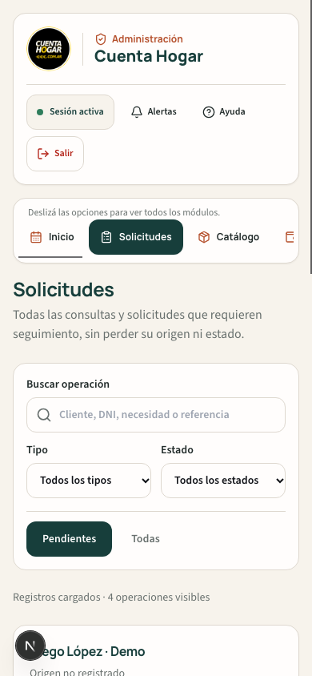

Restauración visual de Administración, tomando como referencia el último código anterior a los cambios de interfaz de Codex: 77ea4e40c1e134c01a5bf15146b919004da17b8e. Los cambios iniciales de gobierno y runtime hasta 32600eb no modificaron src/ ni public/.
| Superficie | Resultado |
|---|---|
| Encabezado y navegación | Logo, sesión, solapas horizontales y orden inicial de módulos. Sin barra lateral ni menú fijo inferior. La solapa seleccionada queda visible en celular. |
| Pantalla principal | Tarjetas grandes con icono, descripción y acceso directo. Solicitudes, catálogo, cartera, rendiciones, afiliados, logística, presupuestos, clientes, reportes y documentación. |
| Bandeja de solicitudes | Tarjetas separadas, manteniendo búsqueda, filtros, paginación, estados e identidad de origen. |
| Módulos actuales | Se mantienen las rutas V2, la ficha de operación con sus cuatro pasos y la navegación de ida y vuelta a la solicitud. Las rutas antiguas conservan redirecciones seguras. |
| Identidad y seguridad | Se conservan el logo oficial vigente, las fuentes locales, autenticación, permisos, formularios y la corrección de privacidad del portal cliente. |
| Datos y motores | No se revierten APIs, colecciones, contratos, finanzas, documentos, Rules, configuración ni numeración CH. Los portales cliente/afiliado y el sitio público conservan su código actual. |
Esto recupera la presentación inicial, no ejecuta un rollback de los motores ni de los datos de Firebase.
npm run test:safe y scripts/testAdminCanonicalNavigation.ts: PASS.scripts/testSimpleOperationBrowser.ts: formulario privado, recepción y aplicación de datos, cuatro pasos, conservación de cambios locales, controles crediticios y snapshots sin cambios: PASS.Todas las escrituras de fixtures y pruebas se realizaron en demo-cuenta-hogar, usando Auth y Firestore Emulator. Para probar las alertas con una cuenta sintética, se usó una copia temporal de las Rules cambiando sólo la dirección de la identidad administrativa por admin@example.invalid; no se modificaron las Rules versionadas ni productivas.
Sin merge, despliegue ni pruebas con escrituras productivas. No se volvió a ejecutar la emisión documental o financiera: sus motores no fueron modificados. Las capturas contienen exclusivamente fixtures sintéticos.





